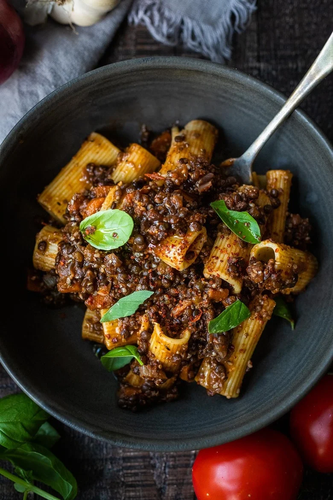

Lentil Bolognese
Homepage

Description
Rich and robust, this plant-based Lentil Bolognese is hearty,
“meaty” and full of depth of flavor. Toss it with your favorite
pasta, or spoon it over creamy polenta- either way, this simple
nourishing vegan meal is one the whole family will enjoy.
Ingredients
- 1 tablespoon olive oil
- 1 chopped onion
- 2 cloves garlic, crushed and chopped
- 1/2 red bell pepper, thinly sliced
- 1 carrot, cut into small cubes
- 1/2 cup thinly sliced mushrooms
- 1/2 cup red wine
- 1 (14 ounce) can diced tomatoes
- 1 cup vegetable broth
- 1 (15 ounce) can green lentils, drained
- 1 teaspoon ground paprika
- 1 teaspoon dried oregano
- 1 teaspoon mixed dried herbs
- 1 pinch ground nutmeg
Steps to make Lentil Bolognese
- Heat olive oil in a large pot over medium heat.
Cook and stir onion and garlic until soft, about 5 minutes.
Stir in red bell pepper and carrot; cook for 4-5 minutes. Add
mushrooms; cook and stir until softened, about 2 minutes.
-
Pour wine into the pot, simmer until slighted reduce,d about 1 minute.
Stir in diced tomatoes and vegetable broth. Bring sauce to a boil; reduce heat and simmer until
flavors combine, 10-15 minutes. Stir in lentils, paprika, basil, oregano, dried herbs,
and nutmeg; cook until lentils are heated through, about 5 minutes.
Nutrition Facts (per serving)
-
Calories: 202
- Fat: 4g
- Carbs: 27g
- Protein: 9g